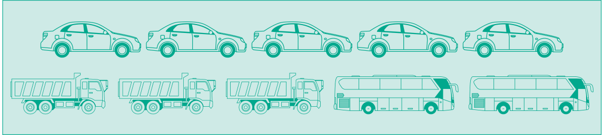
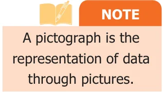
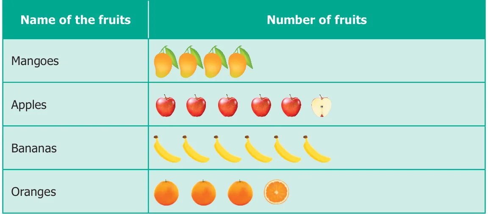
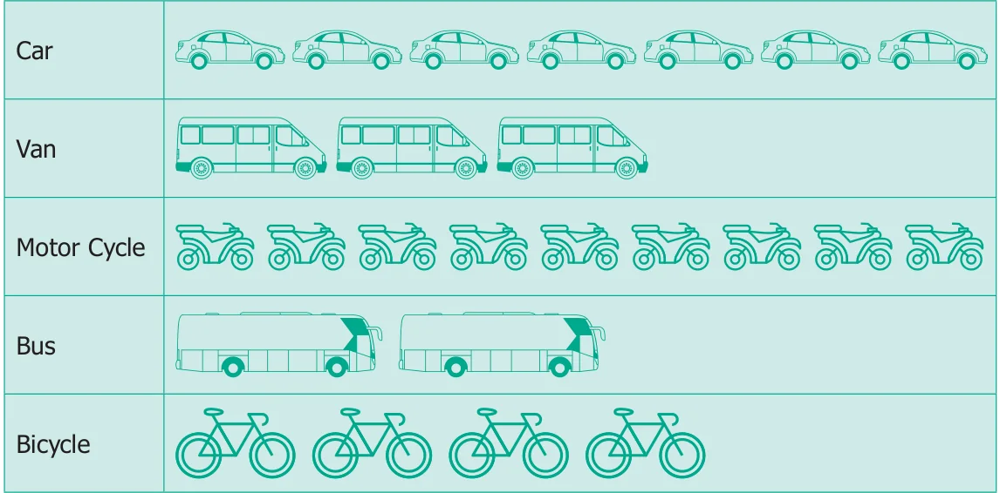
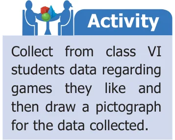

The teacher was discussing about the pollution caused by the vehicles. The students said that they saw many vehicles when they were standing in the bus stop while coming to school. Everyone described in their own way, but Azhagi drew the pictures of the vehicles that she had seen, as shown below.

All the students were able to easily understand that Azhagi had seen 5 cars, 3 lorries and 2 buses. This sort of representation of data using pictures is called Pictograph.
Nowadays pictographs are frequently used in promotion of tourism, weather forecast, geography etc.

Advantages of using Pictograph
- The data can be easily analyzed and interpreted.
- The pictures and symbols help us to understand better.
Do you know?
- The pictograph is a pictorial representation for a word or Phrase.
- A pictograph is also called Pictogram.
- Pictographs were used as the earliest known form of writing examples having been discovered in Egypt and Mesopotomia since 3000 BC.
5.3.1 Need for scaling in the Pictograph
Fig. 5.3 shows, a fruit stall where there are 40 mangoes, 55 apples, 35 oranges and 60 bananas. How can we represent this data by using pictures? If the data is very large, it is very difficult and time consuming to represent each of the fruits in a pictograph. In such cases, we can use one picture to represent many of the same kind. This is called scaling.
5.3.2 Drawing Pictographs
Consider the above data of fruits. 40 and 60 are multiples of 10, while 55 and 35 are multiples of 5. Let us assume, that One full picture of fruit represents 10 fruits and One half picture represents 5 fruits.

The pictograph can be drawn for the above data as shown in the table.
5.3.3 Interpreting pictograph
From the above pictograph the number of fruits can be calculated very easily.
Number of Mangoes \(=\) 4 full pictures \(\Rightarrow 4 \times 10 = 40\) mangoes
Number of Apples \(=\) 5 full pictures and 1 half picture
\(\Rightarrow (5 \times 10) + 5 = 55\) apples
Number of Bananas \(=\) 6 full pictures \(\Rightarrow 6 \times 10 = 60\) bananas
Number of Oranges \(=\) 3 full pictures and 1 half picture
\(\Rightarrow (3 \times 10) + 5 = 35\) oranges
Example 5.2
The following table shows the number of vehicles sold in a year.

Key: One picture represents 10 vehicles
Look at the pictograph and answer the following questions.
- How many motor cycles were sold in a year?
- Number of buses sold in a year is 20. Say True or False.
- How many bicycles were sold ?
- How many cars and vans were sold?
- How many vehicles were sold altogether?
Solution
Given : 1 picture represents 10 vehicles

- There were \(9 \times 10 = 90\) motor cycles sold.
- True.
- There were \(4 \times 10 = 40\) bicycles sold.
- There were 7 cars and 3 vans pictures.
Therefore \(70 + 30 = 100\) cars and vans sold. - There were 7 cars, 3 vans, 9 motor cycles, 2 buses and 4 bicycles sold.
Therefore, \(70 + 30 + 90 + 20 + 40 = 250\) vehicles sold.